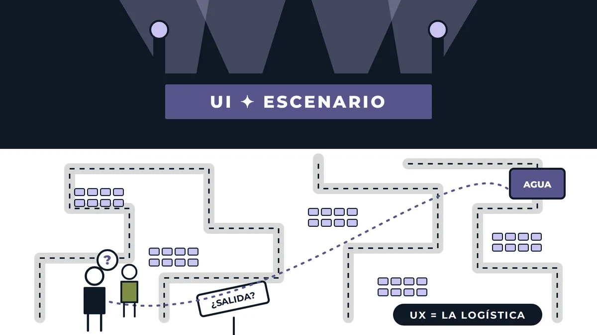
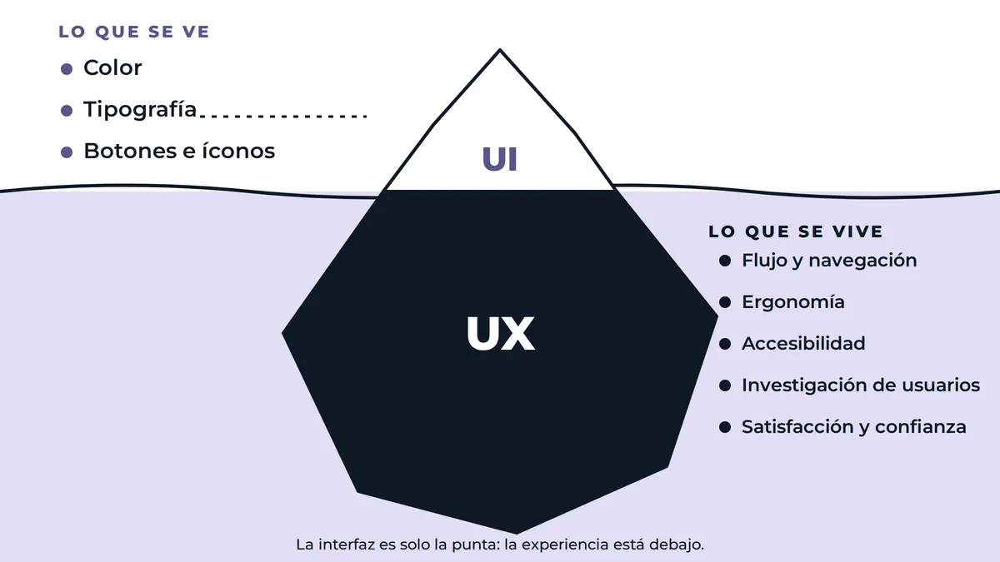
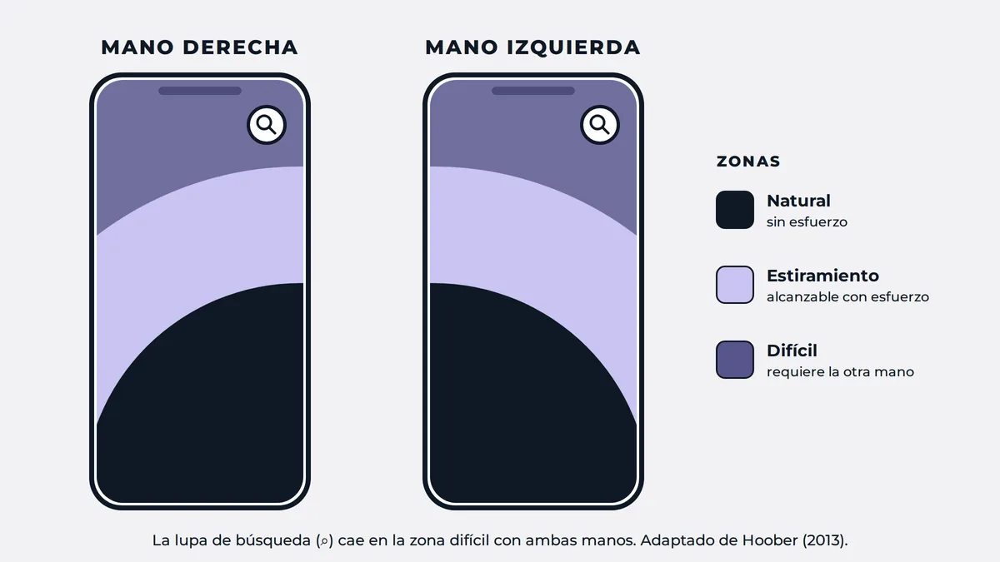
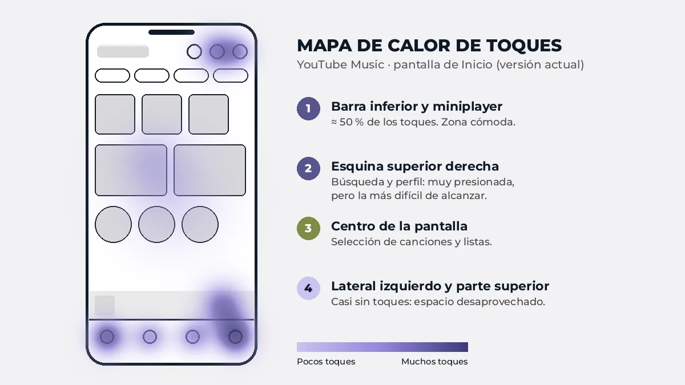
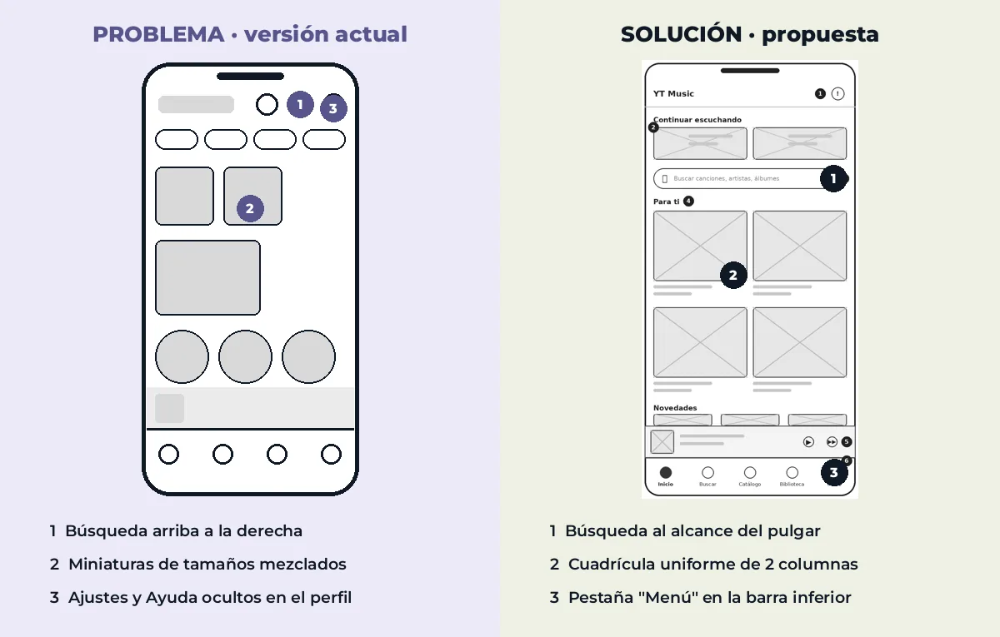
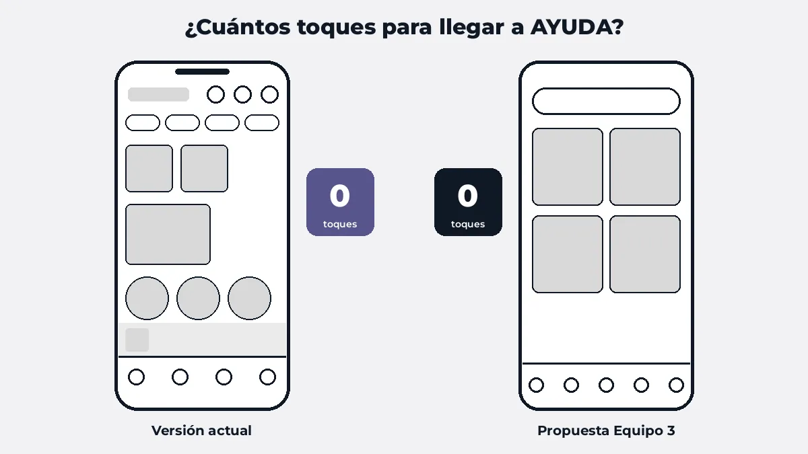

01 · Introducción
Experiencia de usuario
Detrás de cada clic hay una historia. En esta página explicamos la diferencia entre lo que vemos en una pantalla (UI) y lo que vivimos al usarla (UX), y lo aplicamos a un caso real: la app YouTube Music.
La experiencia de usuario (UX) es lo que una persona percibe, piensa y siente cuando utiliza un producto, servicio o interfaz. Una experiencia puede ser útil y agradable, o convertirse en una cadena de pasos confusos. Por eso, antes de dibujar pantallas hay que entender a las personas: qué necesitan, en qué contexto usan la app y qué les cuesta trabajo.
El recorrido de esta página va de una historia cotidiana (un concierto) a un rediseño concreto, pasando por las definiciones, la ergonomía del pulgar y los mapas de calor. Cada apartado tiene un recurso visual que puedes abrir en grande desde su botón o desde la galería de recursos.
Comprender
Qué es UI, qué es UX y por qué no son lo mismo.
Observar
Cómo sostenemos el celular y dónde tocamos la pantalla.
Rediseñar
Una propuesta para que YouTube Music se use con menos esfuerzo.
02 · Storytelling
El concierto de tus sueños
Una historia para entender, en un minuto, la diferencia entre lo que se ve y lo que se vive.
Imagina que por fin consigues boletos para el concierto de tus sueños. El escenario es espectacular: pantallas gigantes, luces y un sonido perfecto. Pero al entrar al estadio no hay señalización, los pasillos parecen un laberinto, tu asiento está del otro lado y para comprar agua tienes que cruzar todo el lugar. Al salir, recuerdas más la frustración que la música.

¿Qué nos enseña?
El escenario representa la interfaz: lo que se ve. La logística del estadio representa la experiencia de usuario: lo que se vive. Un producto digital puede verse increíble y aun así fracasar si la persona no encuentra lo que busca, se pierde o necesita demasiados pasos. Como dice Norman (2013), el buen diseño es el que se adapta a las personas, no el que les exige adaptarse.
«Lo que se ve atrae; lo que se vive es lo que se recuerda.»
Decide tú
Entras a la página de boletos y ves varios botones poco claros y un aviso de cargos adicionales. ¿Qué harías?
03 · Conceptos
¿Qué es UI y qué es UX?
UI · Interfaz de usuario
UI significa User Interface. Es todo lo que la persona ve y toca en la pantalla: colores, tipografía, íconos, botones y menús. Responde a la pregunta «¿cómo se ve?».
- Contraste y legibilidad de los textos.
- Tamaño y ubicación de los controles.
- Consistencia en colores, íconos y estados.
UX · Experiencia de usuario
UX significa User Experience. Son las percepciones y respuestas de una persona al usar un producto, sistema o servicio (ISO, 2019). Responde a «¿cómo funciona y cómo me hace sentir?».
- Útil: ayuda a completar una tarea real.
- Usable: se entiende sin esfuerzo innecesario.
- Confiable: comunica estados y errores con claridad.

04 · Comparación
UI vs. UX: distintas, pero inseparables
Una pantalla puede lucir espectacular y, aun así, ser frustrante; también puede ser funcional, pero difícil de leer. Nielsen (1994) resume la usabilidad en diez heurísticas; varias de ellas (visibilidad del estado, control del usuario, prevención de errores) dependen de la UX tanto como de la UI.
| Aspecto | UI · Interfaz | UX · Experiencia |
|---|---|---|
| Pregunta clave | ¿Cómo se ve? | ¿Cómo funciona y cómo me hace sentir? |
| Ejemplo | Color, forma y tamaño del botón «Buscar» | Que el botón «Buscar» se alcance con el pulgar |
| Se mide con | Consistencia visual, contraste y legibilidad | Tiempo de tarea, número de toques, errores |
| Herramientas | Guías de estilo, paletas y tipografía | Pruebas con usuarios y mapas de calor |
05 · Ergonomía
Ergonomía y alcance del pulgar
No todas las zonas de la pantalla cuestan el mismo esfuerzo.
Hoober (2013) observó a 1,333 personas usando su teléfono en la calle, en aeropuertos y en el transporte. El 49 % lo sostenía con una sola mano y operaba la pantalla únicamente con el pulgar. Por eso la parte inferior y central se alcanza sin esfuerzo, mientras que las esquinas superiores obligan a estirar la mano o a cambiar de agarre.

Zona natural
Parte inferior y central. Aquí deben ir las acciones más frecuentes: reproducir, buscar y navegar.
Zona de estiramiento
Laterales y parte media alta. Adecuada para acciones secundarias.
Zona difícil
Esquinas superiores. Exige cambiar de agarre. En YouTube Music, el ícono de búsqueda está justo aquí.
Recomendación: los objetivos táctiles deben medir al menos 48 × 48 dp (Google, s.f.) y las acciones clave deben ubicarse en la zona natural del pulgar.
06 · Investigación
Mapas de calor
Dónde tocamos realmente la pantalla.
Un mapa de calor es una representación visual que pinta con colores intensos las zonas de la pantalla donde las personas tocan con más frecuencia y con colores suaves las que casi no usan. Para construirlo activamos en Android la opción «Mostrar toques», grabamos la pantalla durante tres sesiones de uso de YouTube Music y marcamos cada toque sobre la interfaz.

Lo que encontramos
- La mayoría de los toques se concentra en la barra inferior y en la zona central, donde están las canciones y los controles de reproducción.
- La búsqueda es de las acciones más usadas, pero su ícono está en la esquina superior derecha: la zona más difícil para el pulgar.
- Llegar a «Ayuda» exige 4 toques entre menús poco visibles; varios toques se repitieron porque no se encontraba la opción.
Regla clave: si la zona más usada coincide con la más difícil de alcanzar, hay un problema de diseño.
07 · Propuesta
Antes y después: rediseño de YouTube Music
Aplicamos lo aprendido para mejorar la experiencia.
Antes: el problema
- El ícono de búsqueda está en la esquina superior derecha, fuera del alcance cómodo del pulgar.
- Las portadas grandes ocupan casi toda la pantalla y obligan a desplazarse mucho.
- Llegar a «Ayuda» requiere 4 toques entre menús poco visibles.
Después: nuestra propuesta
- Búsqueda a media altura y una pestaña «Buscar» en la barra inferior, dentro de la zona natural.
- Contenido en cuadrícula de 2 columnas: se ve más con menos desplazamiento.
- Nueva pestaña «Menú»: Ayuda en solo 2 toques (−50 %).


Rediseñar no es decorar: es reorganizar para que el usuario llegue más rápido y con menos esfuerzo.
08 · Cierre
Conclusiones
UI y UX trabajan juntas. La calidad de una experiencia no depende solo del aspecto de la interfaz, sino de lo que las personas consiguen hacer con ella. El diseño debe comenzar con una necesidad; después hay que entender el recorrido, detectar los obstáculos, proponer soluciones y comprobarlas con pruebas de uso.
Nuestro ejercicio con YouTube Music lo muestra en pequeño: observar cómo se sostiene el celular y dónde se toca la pantalla bastó para encontrar tres problemas concretos y proponer una solución que reduce a la mitad los toques para llegar a Ayuda. Una buena UX es invisible: cuando funciona, nadie la nota; cuando falla, todos la sufren.
09 · Galería
Recursos multimedia
Los seis recursos de esta página, en orden. Haz clic en cualquiera para verlo en grande y navegar entre ellos con los botones Anterior y Siguiente.
10 · Fuentes
Referencias
Fuentes citadas en esta página, en formato APA, 7.ª edición.
- Google. (s.f.). Accessibility basics. Material Design 3. https://m3.material.io/foundations/accessible-design/accessibility-basics
- Hoober, S. (18 de febrero de 2013). How do users really hold mobile devices? UXmatters. https://www.uxmatters.com/mt/archives/2013/02/how-do-users-really-hold-mobile-devices.php
- International Organization for Standardization. (2019). Ergonomics of human-system interaction — Part 210: Human-centred design for interactive systems (ISO 9241-210:2019). https://www.iso.org/standard/77520.html
- Nielsen, J. (1994). 10 usability heuristics for user interface design. Nielsen Norman Group. https://www.nngroup.com/articles/ten-usability-heuristics/
- Norman, D. (2013). The design of everyday things (Ed. rev.). Basic Books.
- Valdez Zavala, D. A., y Damián Polo, M. F. (2026). Recursos multimedia R1–R6 para la wiki «Experiencia de usuario» [Ilustración, infografía, diagrama, mapa de calor, comparativo y animación]. Elaboración propia.
Comunidad
Colabora
¿Has notado una dificultad al usar una app? Cuéntanos cuál y cómo la mejorarías. Este formulario es una demostración: no envía datos a ningún servidor.
Universidad del Valle de México
Acerca de nosotros
Wiki Design es el proyecto integrador de la materia Experiencia de Usuario. El grupo construye una wiki con ocho temas; esta página corresponde al tema Experiencia de usuario.
Contenido, recursos multimedia y maquetación de esta página: Daniel Alejandro Valdez Zavala y María Fernanda Damián Polo. La identidad visual (paleta azul marino, morado, lavanda y verde olivo; tipografías Montserrat y Open Sans) es la que el grupo eligió en la Etapa 3.